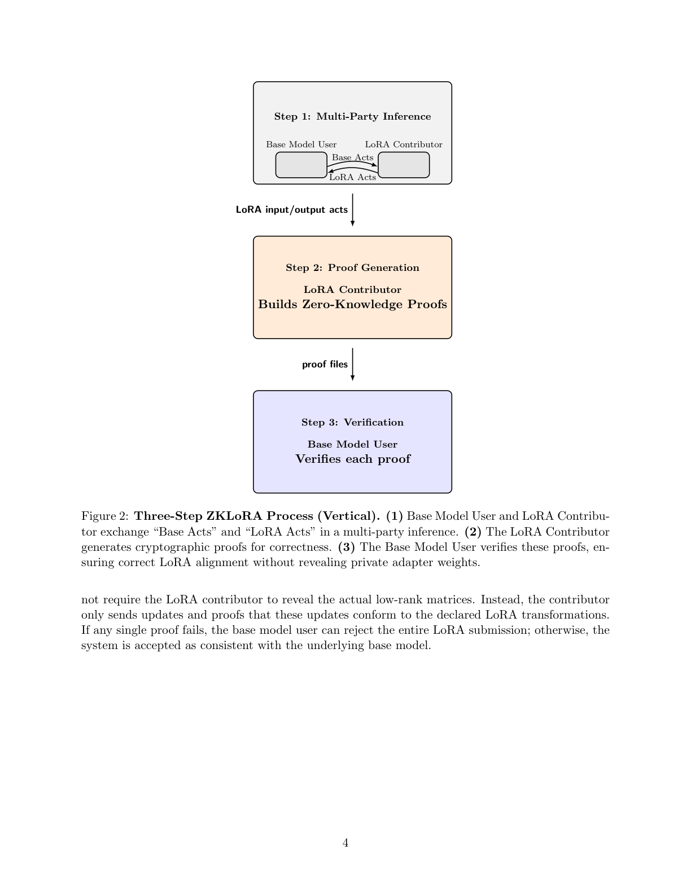
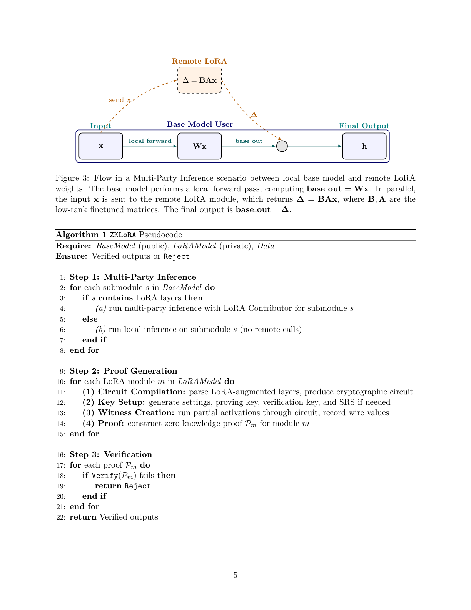
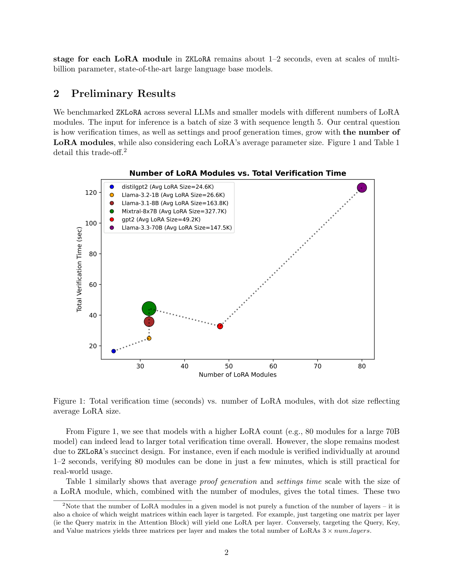

研究動機
問題背景：LoRA 交易的信任困境
大型語言模型 (LLM) 的微調成本極高，而 Low-Rank Adaptation (LoRA) 提供了一種參數高效的解決方案。然而，在分散式、不可信的環境中，LoRA 的交易面臨信任困境：
買家（Base Model User）的需求
想要驗證 LoRA 是否真的能與基座模型配合運作，但不想在付款前就拿到 LoRA 權重（怕賣家不給錢就跑）。
賣家（LoRA Contributor）的需求
想要保護 LoRA 權重的隱私，直到收到付款。但買家不信任未驗證的產品。
傳統驗證方法的問題
為什麼不能直接驗證？
- 重跑推論：需要賣家交出 LoRA 權重，違反隱私保護
- 逐參數檢查：對於數十億參數的模型不切實際
- 信任第三方：引入中心化風險，不適合去中心化場景
ZKLoRA 的解決方案
使用零知識證明，讓 LoRA 貢獻者能夠證明其 LoRA 模組的正確性，
而無需透露實際的權重。每個 LoRA 模組的驗證只需 1-2 秒。
應用場景
LoRA 市場
買賣雙方的安全交易
合約訓練
外包微調的品質保證
去中心化 AI
分散式團隊的信任協作
多 LoRA 管線
多適配器場景的驗證
技術背景
什麼是 LoRA？
Low-Rank Adaptation (LoRA)[4] 是一種參數高效的微調技術，透過注入小型低秩適配器矩陣來調整預訓練模型。
核心想法：凍結原始權重 $W$，只訓練低秩分解的增量：
$W' = W + \Delta W = W + BA$
其中：
- $W \in \mathbb{R}^{d \times k}$：原始凍結權重
- $B \in \mathbb{R}^{d \times r}$：低秩矩陣
- $A \in \mathbb{R}^{r \times k}$：低秩矩陣
- $r \ll \min(d, k)$：秩，通常為 8-64
LoRA 的優勢
| 參數減少 | 250× 以上 |
| 記憶體節省 | 顯著降低 |
| 可交換性 | 多個 LoRA 共用基座 |
| 專業化 | 醫療、法律等領域 |
增量可驗證計算 (IVC)
Incrementally Verifiable Computation (IVC)[7] 是 ZKLoRA 的理論基礎。核心概念：
- 遞迴證明：證明可以「證明其他證明的正確性」
- 可更新性：每個新步驟都能在前一步驟的保證上驗證
- 低驗證開銷：大幅減少長計算的驗證負擔
Nova 與 HyperNova
ZKLoRA 協定設計
核心設計理念
LoRA + ZK 的協同效應
ZKLoRA 巧妙結合了兩個技術的優勢：
- LoRA 的參數高效性：大幅縮減需要證明的參數量
- 零知識的隱私保護：保護貢獻者的專有權重
這種組合使得在去中心化基礎設施上的信任驅動協作成為可能。
三步驟協定流程

1
Multi-Party Inference
多方推論
多方推論
2
Proof Generation
證明生成
證明生成
3
Verification
驗證
驗證
步驟一：多方推論 (Multi-Party Inference)
Base Model User 和 LoRA Contributor 協作進行推論：
- Base Model User 將輸入資料送入基座模型
- 當遇到需要 LoRA 的模組時，發送 Base Acts（部分激活值）給 LoRA Contributor
- LoRA Contributor 計算 $\Delta = BAx$ 並回傳 LoRA Acts
- Base Model User 合併結果：$h = Wx + \Delta$

步驟二：證明生成 (Proof Generation)
LoRA Contributor 的工作
- 電路編譯 (Circuit Compilation)：將 LoRA 轉換解析為密碼學電路
- 金鑰設置 (Key Setup)：生成 proving key、verification key、SRS（如需要）
- 見證創建 (Witness Creation)：執行部分激活值通過電路，記錄所有線路值
- 證明構建 (Proof)：為每個 LoRA 模組構建零知識證明 $\mathcal{P}_m$
步驟三：驗證 (Verification)
Base Model User 的工作
對每個收到的證明 $\mathcal{P}_m$ 執行快速驗證：
- 驗證時間：約 1-2 秒 / 模組
- 不需要 LoRA 權重：只需證明和驗證金鑰
- 任一失敗即拒絕：若任何證明驗證失敗，拒絕整個 LoRA 提交
演算法與工作流程
ZKLoRA 演算法虛擬碼
Algorithm 1: ZKLoRA Pseudocode
Require: BaseModel (public), LoRAModel (private), Data
Ensure: Verified outputs or Reject
Step 1: Multi-Party Inference
for each submodule s in BaseModel do
if s contains LoRA layers then
(a) run multi-party inference with LoRA Contributor for submodule s
else
(b) run local inference on submodule s (no remote calls)
end if
end for
Step 2: Proof Generation
for each LoRA module m in LoRAModel do
(1) Circuit Compilation: parse LoRA-augmented layers, produce circuit
(2) Key Setup: generate settings, proving key, verification key, SRS
(3) Witness Creation: run partial activations through circuit
(4) Proof: construct zero-knowledge proof P_m for module m
end for
Step 3: Verification
for each proof P_m do
if Verify(P_m) fails then
return Reject
end if
end for
return Verified outputs
LoRA 運算的數學表示
單一 LoRA 模組的運算：
輸入：$x \in \mathbb{R}^k$
基座輸出：$\text{base\_out} = Wx$
LoRA 增量：$\Delta = BAx$
最終輸出：$h = \text{base\_out} + \Delta = Wx + BAx$
輸入：$x \in \mathbb{R}^k$
基座輸出：$\text{base\_out} = Wx$
LoRA 增量：$\Delta = BAx$
最終輸出：$h = \text{base\_out} + \Delta = Wx + BAx$
關鍵特性
隱私保護
- LoRA 權重 $(B, A)$ 永不離開 Contributor
- 只傳輸激活值和證明
- 證明不洩露任何關於權重的資訊
確定性保證
- 密碼學正確性保證
- 任何偏差都會被檢測
- 不依賴統計抽樣
實驗結果
實驗設置
- 輸入：batch size = 3, sequence length = 5
- 測試模型：distilgpt2, GPT-2, Llama-3.2-1B, Llama-3.1-8B, Llama-3.3-70B, Mixtral-8x7B
- LoRA 目標：Attention 層的 Q, K, V 矩陣
驗證時間 vs LoRA 模組數量

基準測試結果
| 基座模型 | LoRA 數量 | 平均 LoRA 大小 | 平均 Settings (秒) | 平均 Proof (秒) |
|---|---|---|---|---|
| distilgpt2 | 24 | 24,576 | 38.0 | 31.6 |
| openai-community/gpt2 | 48 | 49,152 | 43.6 | 34.9 |
| meta-llama/Llama-3.2-1B | 32 | 26,624 | 37.2 | 31.0 |
| meta-llama/Llama-3.3-70B-Instruct | 80 | 147,456 | 54.9 | 46.9 |
| meta-llama/Llama-3.1-8B-Instruct | 32 | 163,840 | 57.4 | 47.7 |
| mistralai/Mixtral-8x7B-Instruct-v0.1 | 32 | 327,680 | 86.1 | 73.7 |
關鍵發現
1-2s
單模組驗證時間
70B
支援的最大模型
80
測試的最多 LoRA 數
~2 min
80 模組總驗證時間
結果分析
- 線性擴展：驗證時間隨 LoRA 數量線性增長，斜率平緩
- 大模型可行：即使 Llama-3.3-70B 的 80 個 LoRA，也能在約 2 分鐘內完成驗證
- LoRA 大小影響：Settings 和 Proof 時間隨 LoRA 參數量增加
- 實用性：對於即時驗證場景完全可行
結論與未來工作
主要貢獻總結
MPI
Multi-Party Inference
多方推論協定
多方推論協定
1-2s
單模組驗證
即時可行
即時可行
70B+
支援超大模型
工業級規模
工業級規模
ZK
完全零知識
權重永不洩露
權重永不洩露
技術創新
協定創新
- 首個針對 LoRA 的零知識驗證協定
- Multi-Party Inference 設計
- 基於 Nova/HyperNova 的遞迴證明
實用性創新
- 支援現代最大規模 LLM (70B+)
- 即時驗證 (1-2 秒/模組)
- 開源實現，可直接使用
未來工作
論文提出的延伸方向
- Polynomial Commitments for Base Acts：對基座模型激活值添加多項式承諾，實現端到端可驗證推論
- Multi-Contributor LoRAs：支援多個貢獻者的 LoRA 組合
- 進階 ZK 證明：採用更先進的零知識證明系統以提升效能
- 部分資料隱私：保護使用者輸入資料以及 LoRA 參數
與其他 ZKML 工作的比較
| 系統 | 目標 | 支援規模 | 驗證時間 |
|---|---|---|---|
| zkCNN (2021) | CNN 推論 | VGG-16 (15M) | 59.3 ms |
| zkLLM (2024) | LLM 推論 | 13B 參數 | 1-3 秒 |
| ZKLoRA (2025) | LoRA 驗證 | 70B+ 參數 | 1-2 秒/模組 |
歷史地位
ZKLoRA 是首個針對 LoRA 微調的零知識驗證協定，
填補了 ZKML 領域中「可驗證微調」的空白。
其 Multi-Party Inference 設計為去中心化 AI 生態系統提供了重要基礎。
參考文獻
- Tom B. Brown, et al. "Language Models are Few-Shot Learners." NeurIPS 2020.
- Jacob Devlin, et al. "BERT: Pre-training of Deep Bidirectional Transformers for Language Understanding." NAACL 2019.
- Ning Ding, et al. "Delta Tuning: A Comprehensive Study of Parameter Efficient Methods for Pre-trained Language Models." 2022.
- Edward Hu, et al. "LoRA: Low-Rank Adaptation of Large Language Models." ICLR 2022. arXiv
- Abhiram Kothapalli, Srinath Setty. "HyperNova: Recursive Arguments for Customizable Constraint Systems." CRYPTO 2024.
- Abhiram Kothapalli, Srinath Setty, Ioanna Tzialla. "Nova: Recursive Zero-Knowledge Arguments from Folding Schemes." CRYPTO 2022.
- Leslie G. Valiant. "Incrementally Verifiable Computation or IVC." Harvard University Technical Report, 2008. Link
- Bidhan Roy, Peter Potash, Marcos Villagra. "ZKLoRA: Efficient Zero-Knowledge Proofs for LoRA Verification." arXiv:2501.13965, January 2025. arXiv | GitHub